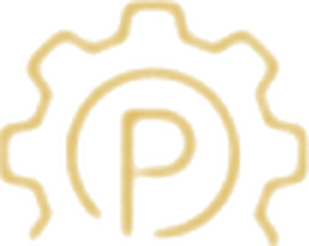
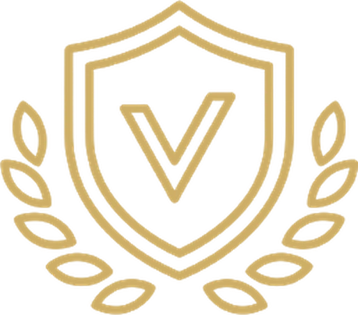
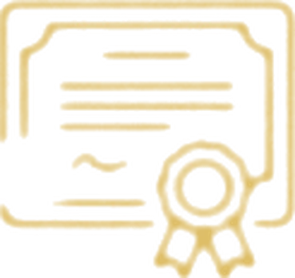
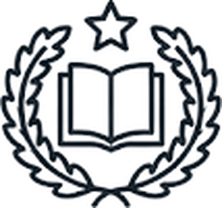
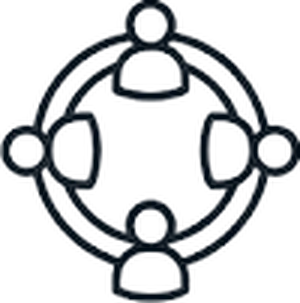

01
01We structure knowledge
Manuals, academic guides and training resources. We design the conceptual and methodological architecture that turns mentoring into a discipline that can be taught, assessed and certified.
Manuals →Train at our academy, with courses from the most distinguished mentors in our community.
Content created by mentors, for mentors

Dr. Nelson de J. Rueda
Director General
We turn experience into professional training in mentoring.
Academia Global RGM develops, structures and certifies mentoring as a professional discipline.
We support individuals, universities and organisations in creating and implementing mentoring programmes with method, international standards and a transformative vision.
We design ready-to-apply academic programmes, certify mentors and support institutions in integrating mentoring into their training models.
The world has changed, and human and professional training is called to evolve with it. Universities provide knowledge. Organisations drive skills development. People build experience throughout their lives.
In this new context, mentoring becomes essential: a bridge between knowledge, experience and conscious transformation.
Mentoring turns experience into judgement, awareness into better decisions and personal journey into value for others. It is a discipline of accompaniment that makes it possible to guide development processes at key moments of professional and human life.
Academia Global RGM structures, teaches and certifies this discipline, training mentors with presence, method and responsibility.
The functions of the Academy, with direct access to each section.
01Manuals, academic guides and training resources. We design the conceptual and methodological architecture that turns mentoring into a discipline that can be taught, assessed and certified.
Manuals →
02Adaptable academic programmes, with academic architecture, methodology and assessment criteria, ready to be implemented by universities, organisations and training centres.
Programmes →
03Institutional endorsement and quality criteria that ensure conceptual coherence, academic rigour and international standards.
Endorsements →
04We certify mentors, validating their experience, judgement and real ability to guide processes of transformation.
Certifications → 05
05A network of authorised centres to implement mentoring programmes with the RGM methodology, academic standards and institutional support.
Training centres → 06
06A digital platform that brings together academic content, practical activities, assessment and certification, to scale up mentor training with quality and traceability.
Online courses →
Include mentoring in degrees and postgraduate programmes. Create diplomas and master's degrees. Differentiate your academic offer.

Turn experience into a profession. Become certified as a mentor. Develop a value proposition.

Develop leaders with judgement. Implement mentoring programmes. Improve organisational culture.

Create training centres. Scale knowledge. Generate impact and business.
Academia Global RGM brings together an academic architecture that is already developed, so that universities and organisations can implement mentoring with clarity, backing and training quality:
A solid foundation for implementing faster, with lower risk and higher quality.
Academia Global RGM has been designed to meet the standards of quality, academic rigour and institutional traceability that higher education demands.
Its methodological structure, academic leadership and international expansion make it a solid platform for universities and institutions to develop joint programmes, certifications with dual endorsement, applied research and specialised university outreach in mentoring.
Its aim is clear: to become an international reference in the training and certification of Expert Mentors, connecting science, professional practice, technology and ethics in a model of excellence.
Academia Global RGM grew out of a history built in practice, is consolidating itself today with programmes and certifications, and is reaching internationally as a platform for training mentors able to accompany human and professional transformation.
From this base, it drives the growth of the Red Global de Mentores, the Rede Global de Mentores and the Global Mentoring Network.